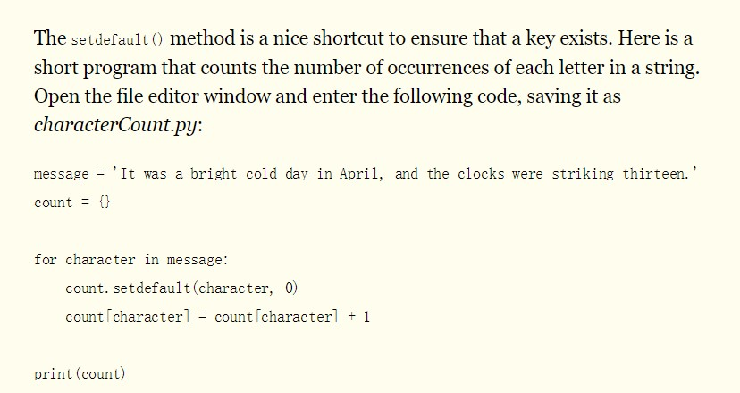

Python学习:
一些奇怪的点:
- 函数定义传参不指定参数类型
- 每个函数都会有返回值，不指定默认返回None（NULL）
- Implementations about Method Overloading in Python (MultiMethods)：
https://stackoverflow.com/questions/6434482/python-function-overloading
https://www.python.org/dev/peps/pep-3124/#user-api
一些Python风格的应用:

More details:
Some books to learn Python：https://automatetheboringstuff.com/
Guide to learn Python for DataSci：https://elitedatascience.com/learn-python-for-data-science
我的新手之旅
必须要认识到：所有学习都是由浅入深的。
我目前的缺点：数学知识薄弱
我目前的优势：我具有一定代码以及工程能力
先调库玩玩
目前入门选择的教程：http://zh.gluon.ai/让hexo支持LaTex
工具：https://github.com/hexojs/hexo-math
little test
Simple inline \(a = b + c\).
$$\begin{aligned} \dot{x} & = \sigma(y-x) \\ \dot{y} & = \rho x - y - xz \\ \dot{z} & = -\beta z + xy \end{aligned}$$ $$\begin{eqnarray} \nabla\cdot\vec{E} &=& \frac{\rho}{\epsilon_0} \\ \nabla\cdot\vec{B} &=& 0 \\ \nabla\times\vec{E} &=& -\frac{\partial B}{\partial t} \\ \nabla\times\vec{B} &=& \mu_0\left(\vec{J}+\epsilon_0\frac{\partial E}{\partial t} \right) \end{eqnarray}$$学习gluon的ndarray
- 用list生成ndarray的写法是嵌套的

- nd.exp(y) 指的是对y张量里的每个元素做 \(e^{y_{ij}}\) 运算
线性回归学习小结:
小批量随机梯度下降
小批量：选取小批量样本
随机：随机选取模型参数初始值
梯度下降：
- 将模型参数放入损失函数，算出损失函数的梯度，并乘以一个我们设定的 正数 。
- 模型参数更新为之前的模型参数减去上面的乘积。
- 用新的模型参数执行梯度下降
经过反复相减，就会得出令损失函数损失最少的模型参数。
调参：调节刚才梯度下降中第一步的 正数 大小
梯度下降思想
概念：
https://blog.csdn.net/yangqiang200608/article/details/78581482
从数值方面向一个未知函数的最小值或最大值进行逼近
联系知识：之前学过的数值分析方法课
加入冲量项：
https://blog.csdn.net/LoseInVain/article/details/52804517?locationNum=15&fps=1
学习率相关：
https://www.cnblogs.com/bonelee/p/8578481.html
其内在思想
- 数据集
- 建立在数据集上的模型
- 按模型训练
- 得出函数
更加抽象的框架
- 新建一个神经元
- 输入一批数据集
- 自动执行优化算法
- 得出最优解
- 神经元被训练完成
损失函数
MSE（Mean Squared Error）损失函数：样本与预测值的差的L2范数
对线性回归问题非常适用
多类分类学习小结：
归一化指数函数（softmax）
概念：
- https://baike.baidu.com/item/Softmax%E5%87%BD%E6%95%B0/22772270?fr=aladdin
- https://baike.baidu.com/item/%E5%BD%92%E4%B8%80%E5%8C%96%E6%8C%87%E6%95%B0%E5%87%BD%E6%95%B0/22660782?fr=aladdin
为什么要对数据进行归一化：
http://www.cnblogs.com/LBSer/p/4440590.html
交叉熵：
https://baike.baidu.com/item/%E4%BA%A4%E5%8F%89%E7%86%B5/8983241?fr=aladdin
https://blog.csdn.net/tsyccnh/article/details/79163834 （描述更清楚）
损失函数
交叉熵损失函数：
卷积神经网络
直观的解释：https://ujjwalkarn.me/2016/08/11/intuitive-explanation-convnets/